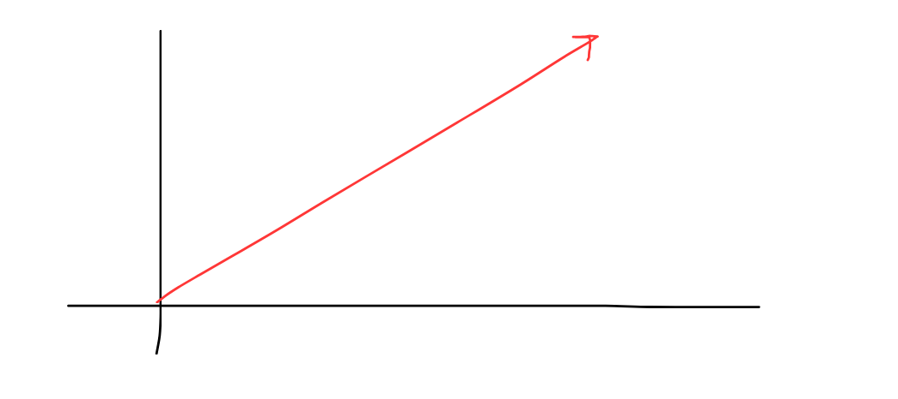
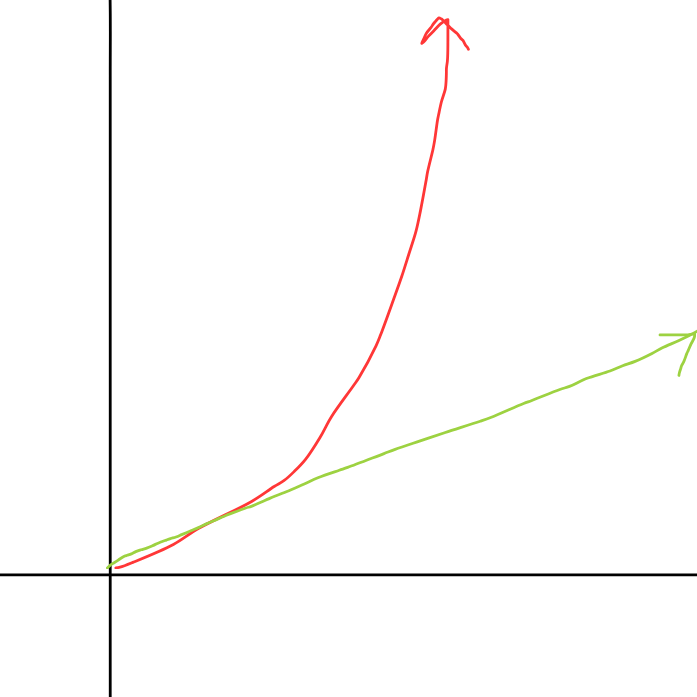
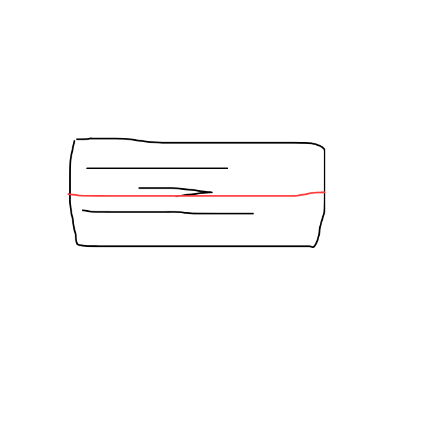
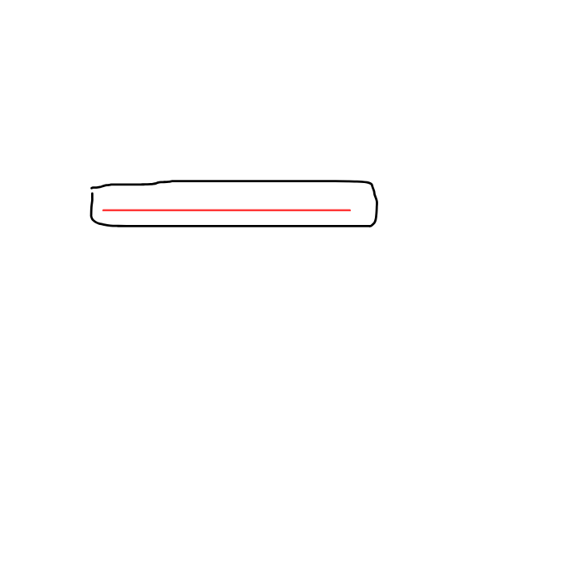

Time Complexity
A programmers approach
Usually when we write an algorthim or code, we usually never think too much about how much time it would take to execute, or how much the time would vary if we increase our input data size
but in competative proramming we really need to consider this and also in solving real life world problems
What do we mean by time complexity?
Many people have this misunderstand that time complexity means how much time the algorithm would take to execute this task, or a program, but its not the case
time complexity doesn't measure the accruate vaue of time, but rather focuses on how the algorithm running time would increase as the input size increases.
Just imagine you have an algorithm which scans all the menu on the list given, for a single menu, it would be fast but what is we have billions of things in the menu, then the time would increase.
this is what time complexity tellssss

This is the illustration of the above example, as the time taken increases, as the number of inputs increase linearly, hence the time complexity for going through all dishes in the menu is
\(O(n)\) where n is the number of inputs we have given in the algorithm
The general Idea??
Okay aniket, i am begining to understand this but could you guide me, like i get the gist of it, but can i find it for everything
Aniket: Hmm yup, you could see basic algorithm, and try to find the time complexxit on your own
Nested Loop
A nested loop is just a loop inside loop :D, you would be better understand when you see it lol
As you can see that in the above simulation, this is an example of a nested loop, and you could see in the worst case, where the number of rows = number of colums, we could say that the algorithm runs like
\(O(n*n) = O(n^2) \)
so the time complexity is \(O(n^2)\)
So in reality it would look something like this :

So as the input size increases the time taken by the algorithm to finish the task inreases quadratically, so it is more slower than \(O(n)\)
Lets talk about an algorithm whose time doesn't depend on the input size of the number of inputs!!!
\(O(constant)\)
Imagine you have a list, and you just have to name the first element on the groceerry list, if the list has 1 element, 100 elements or \(1000000000000000000000000000000000000 = 10^{i\ don't\ know} \) eleements then would the size of the list matter, since you have to just say the first word!?
No right, so since the time doesn't depend on the number of inputs its a constant time complexity :D
There are several other time complexities which we are going to encounter in this chapter :D
Lets look at them one by one :D
Different time complexities
There are several time complexities,which are pretty famous,
Lets look in one of the things.
Have you searched a dictonary, like searching by halfing the page count whenever you search?
That is you are reducing the search space by 2 every time, so its like you are just doing the number of steps as \(2^n\) where n are the number of steps you have to perform
so that we can say the time complexity is \(log(n)\).
This is an animation not animation but an illustration of how the discotnary you open works.


So you see thats how \(log(n)\) time complexity works, reducing the ssearch space into half or something.
Next is our \(O(n!)\) time complexity, which is like Hell Nawh!
Imagine a salesman who is wondering in the city and how he's got to like cover every area, not area but like visit every city, so we have to find a shortest path such that sum of all paths is minimum.